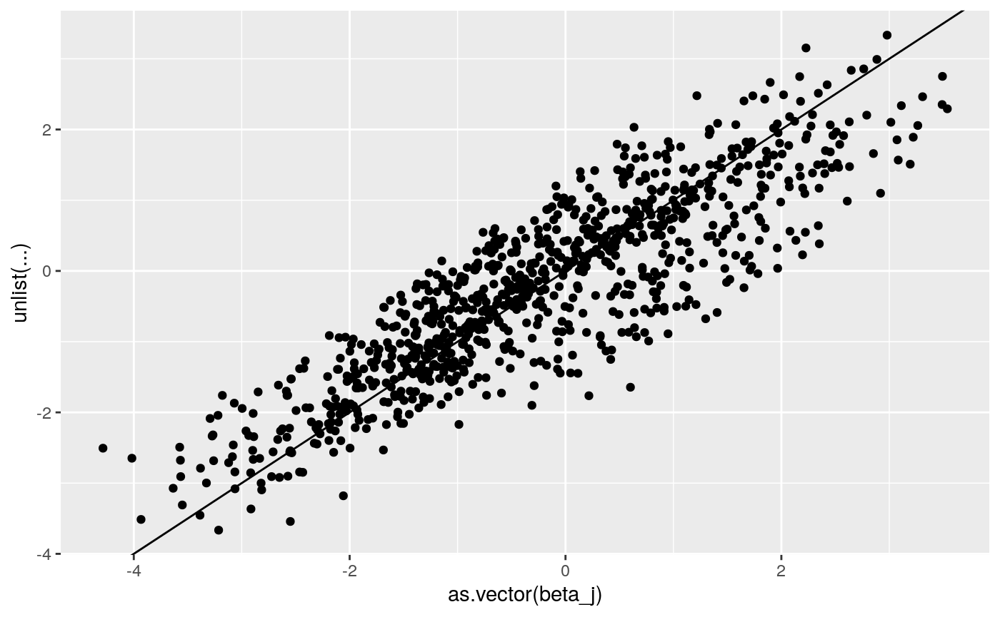
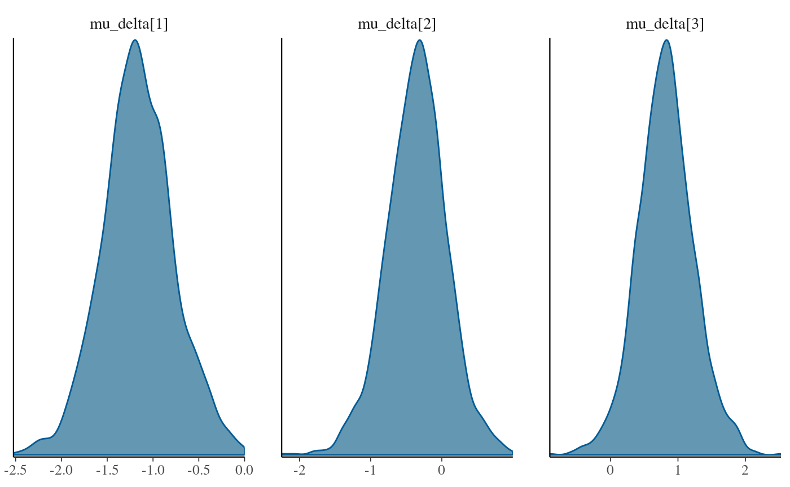

Test Simple 3-level Multivariate Normal Model
John Flournoy
2020-04-01
test-simple-3l-mv-model.RmdThe goal of this vignette is to demonstrate that the multivariate normal model that I will use for each parameter in the learning model is able to be estimated accurately and without prohibitively excessive computer time. In these examples I show that accounting for the nested structure of data with observations nested in participants nested in sample may be important. I also show that the 3-level model using both centered and non-centered parameterization of the 3rd level group means gives similar results. Finally, it may be helpful to note that the centered (that is, standard) parameterization finishes sampling in much less time than the non-centered model.
Generate data where there are 3 conditions, and individual variation in probability of choosing ‘left’ for each condition. Set the mean probability of left for each condition to values in beta_mu below.
library(probly)
set.seed(150319/2018)
j <- 300 #number of subjects
t <- 100 #number of trials
g <- 4 #number of subsamples
c <- 3 #number of conditions
n <- t*c*j #number of observations
gg <- sample(1:g, size = j, replace = T) #group IDs
hyper_gamma_mu <- c(-1, 0, 1) #The mean population effect
hyper_gamma_sigma <- 1
gamma_mu <- matrix(rnorm(c*g, hyper_gamma_mu, hyper_gamma_sigma), nrow = g, byrow = T) #specific sample mean effects
gamma_sigma <- matrix(
c(1, .2, .2,
.2, 1, .2,
.2, .2, 1),
nrow = 3, byrow = T
) #correlation among random effects at between individuals in the same sample
beta_j <- t(apply(gamma_mu[gg,], 1, function(mu) {MASS::mvrnorm(1, mu, gamma_sigma)}))
beta_j_df <- as.data.frame(beta_j)
beta_j_df$b0 <- beta_j_df[,1]
beta_j_df$b1 <- beta_j_df[,2] - beta_j_df[,1]
beta_j_df$b2 <- beta_j_df[,3] - beta_j_df[,1]
summary(beta_j_df)
#> V1 V2 V3 b0
#> Min. :-4.0175 Min. :-4.2855 Min. :-2.4245 Min. :-4.0175
#> 1st Qu.:-1.9721 1st Qu.:-1.2661 1st Qu.: 0.0265 1st Qu.:-1.9721
#> Median :-1.2353 Median :-0.4610 Median : 0.8560 Median :-1.2353
#> Mean :-1.2108 Mean :-0.3778 Mean : 0.8281 Mean :-1.2108
#> 3rd Qu.:-0.5176 3rd Qu.: 0.5260 3rd Qu.: 1.6584 3rd Qu.:-0.5176
#> Max. : 2.5766 Max. : 3.1939 Max. : 3.5379 Max. : 2.5766
#> b1 b2
#> Min. :-3.1894 Min. :-2.186
#> 1st Qu.:-0.3325 1st Qu.: 1.077
#> Median : 0.7406 Median : 2.104
#> Mean : 0.8330 Mean : 2.039
#> 3rd Qu.: 1.9007 3rd Qu.: 3.065
#> Max. : 5.5439 Max. : 5.840
cor(beta_j_df[,1:3])
#> V1 V2 V3
#> V1 1.0000000 0.1594171 0.2178985
#> V2 0.1594171 1.0000000 -0.1485011
#> V3 0.2178985 -0.1485011 1.0000000
cor(beta_j_df[,4:6])
#> b0 b1 b2
#> b0 1.0000000 -0.5765408 -0.6214389
#> b1 -0.5765408 1.0000000 0.2365417
#> b2 -0.6214389 0.2365417 1.0000000
lapply(1:g, function(grp) cor(beta_j_df[gg == grp,1:3]))
#> [[1]]
#> V1 V2 V3
#> V1 1.0000000 0.1166829 0.3220135
#> V2 0.1166829 1.0000000 0.1205976
#> V3 0.3220135 0.1205976 1.0000000
#>
#> [[2]]
#> V1 V2 V3
#> V1 1.0000000 0.2920232 0.2489808
#> V2 0.2920232 1.0000000 0.2845323
#> V3 0.2489808 0.2845323 1.0000000
#>
#> [[3]]
#> V1 V2 V3
#> V1 1.0000000 0.2526182 0.1727907
#> V2 0.2526182 1.0000000 0.4202191
#> V3 0.1727907 0.4202191 1.0000000
#>
#> [[4]]
#> V1 V2 V3
#> V1 1.0000000 0.19792835 0.42980543
#> V2 0.1979284 1.00000000 0.07651541
#> V3 0.4298054 0.07651541 1.00000000
dd <- data.frame(id = as.factor(1:j),
grp = as.factor(gg),
condition = as.factor(rep(rep(1:3, each = n/j/3), each = j)))
design <- model.matrix(~ 0 + id:condition, dd)
dd$theta <- design %*% as.vector(beta_j)
dd$p <- arm::invlogit(dd$theta)
dd$y <- rbinom(dim(dd)[1], 1, dd$p)
dplyr::summarize(
dplyr::group_by(dd, grp),
N = length(unique(id)))
#> # A tibble: 4 x 2
#> grp N
#> <fct> <int>
#> 1 1 77
#> 2 2 69
#> 3 3 79
#> 4 4 75library(lme4)
#> Loading required package: Matrix
library(brms)
#> Loading required package: Rcpp
#> Loading 'brms' package (version 2.11.1). Useful instructions
#> can be found by typing help('brms'). A more detailed introduction
#> to the package is available through vignette('brms_overview').
#>
#> Attaching package: 'brms'
#> The following object is masked from 'package:lme4':
#>
#> ngrps
library(rstan)
#> Loading required package: StanHeaders
#> Loading required package: ggplot2
#> rstan (Version 2.19.3, GitRev: 2e1f913d3ca3)
#> For execution on a local, multicore CPU with excess RAM we recommend calling
#> options(mc.cores = parallel::detectCores()).
#> To avoid recompilation of unchanged Stan programs, we recommend calling
#> rstan_options(auto_write = TRUE)
library(future)
plan('multiprocess')
#> Warning: [ONE-TIME WARNING] Forked processing ('multicore') is disabled
#> in future (>= 1.13.0) when running R from RStudio, because it is
#> considered unstable. Because of this, plan("multicore") will fall
#> back to plan("sequential"), and plan("multiprocess") will fall back to
#> plan("multisession") - not plan("multicore") as in the past. For more details,
#> how to control forked processing or not, and how to silence this warning in
#> future R sessions, see ?future::supportsMulticore
glm_fit <- glm(y ~ 1 + condition, data = dd, family = 'binomial')
lme4_fit_fn <- '/data/jflournoy/split/probly/lme4_test_fit.RDS'
lme4_fit_future <- future::future(
CachedFit(
{
lme4::glmer(y ~ 1 + condition + (1 + condition | grp/id), data = dd, family = 'binomial')
},
rds_filename = lme4_fit_fn))
lme4_fit_2L_fn <- '/data/jflournoy/split/probly/lme4_test_fit_2L.RDS'
lme4_fit_2L_future <- future::future(
CachedFit(
{
lme4::glmer(y ~ 1 + condition + (1 + condition | id), data = dd, family = 'binomial')
},
rds_filename = lme4_fit_2L_fn))
lme4_fit_2L_2rx_fn <- '/data/jflournoy/split/probly/lme4_test_fit_2L_2rx.RDS'
lme4_fit_2L_2rx_future <- future::future(
CachedFit(
{
lme4::glmer(y ~ 1 + condition + (1 + condition | id) + (1 + condition | grp),
data = dd, family = 'binomial')
},
rds_filename = lme4_fit_2L_2rx_fn))
summary(glm_fit)
#>
#> Call:
#> glm(formula = y ~ 1 + condition, family = "binomial", data = dd)
#>
#> Deviance Residuals:
#> Min 1Q Median 3Q Max
#> -1.4667 -1.0552 -0.7976 0.9134 1.6127
#>
#> Coefficients:
#> Estimate Std. Error z value Pr(>|z|)
#> (Intercept) -0.98231 0.01297 -75.75 <2e-16 ***
#> condition2 0.68780 0.01745 39.42 <2e-16 ***
#> condition3 1.64071 0.01779 92.23 <2e-16 ***
#> ---
#> Signif. codes: 0 '***' 0.001 '**' 0.01 '*' 0.05 '.' 0.1 ' ' 1
#>
#> (Dispersion parameter for binomial family taken to be 1)
#>
#> Null deviance: 123961 on 89999 degrees of freedom
#> Residual deviance: 114591 on 89997 degrees of freedom
#> AIC: 114597
#>
#> Number of Fisher Scoring iterations: 4
rbind(
means = unlist(dplyr::summarize(dplyr::group_by(dd, condition), mean = mean(y))[,2]),
glm_coef = c(coef(glm_fit)[1], sum(coef(glm_fit)[1:2]), sum(coef(glm_fit)[c(1,3)])),
glm_p = arm::invlogit(c(coef(glm_fit)[1], sum(coef(glm_fit)[1:2]), sum(coef(glm_fit)[c(1,3)]))))
#> mean1 mean2 mean3
#> means 0.2724333 0.4269000 0.6589000
#> glm_coef -0.9823117 -0.2945104 0.6583961
#> glm_p 0.2724333 0.4269000 0.6589000
Sys.sleep(3)
if(resolved(lme4_fit_future)){
lme4_fit <- future::value(lme4_fit_future)
print(summary(lme4_fit))
rbind(
means = unlist(dplyr::summarize(dplyr::group_by(dd, condition), mean = mean(y))[,2]),
lme4_coef = c(fixef(lme4_fit)[1], sum(fixef(lme4_fit)[1:2]), sum(fixef(lme4_fit)[c(1,3)])),
lme4_p = arm::invlogit(c(fixef(lme4_fit)[1], sum(fixef(lme4_fit)[1:2]), sum(fixef(lme4_fit)[c(1,3)]))))
print(
ggplot2::qplot(as.vector(hyper_gamma_mu),
fixef(lme4_fit) + c(0, fixef(lme4_fit)[c(1,1)])) +
geom_abline(intercept = 0, slope = 1))
print(
ggplot2::qplot(as.vector(gamma_mu),
unlist(coef(lme4_fit)$grp+
cbind(rep(0, 4),coef(lme4_fit)$grp[,c(1,1)]))) +
geom_abline(intercept = 0, slope = 1))
print(
ggplot2::qplot(as.vector(beta_j),
unlist(coef(lme4_fit)$`id:grp`+
cbind(rep(0, dim(beta_j)[1]),coef(lme4_fit)$`id:grp`[,c(1,1)]))) +
geom_abline(intercept = 0, slope = 1))
}
#> Loading...
#> Generalized linear mixed model fit by maximum likelihood (Laplace
#> Approximation) [glmerMod]
#> Family: binomial ( logit )
#> Formula: y ~ 1 + condition + (1 + condition | grp/id)
#> Data: dd
#>
#> AIC BIC logLik deviance df.resid
#> 96318.7 96459.8 -48144.4 96288.7 89985
#>
#> Scaled residuals:
#> Min 1Q Median 3Q Max
#> -5.5537 -0.6271 -0.2850 0.6748 5.9928
#>
#> Random effects:
#> Groups Name Variance Std.Dev. Corr
#> id:grp (Intercept) 1.2781 1.1306
#> condition2 1.7325 1.3163 -0.69
#> condition3 1.5496 1.2448 -0.66 0.56
#> grp (Intercept) 0.0547 0.2339
#> condition2 0.7732 0.8793 -0.19
#> condition3 0.4639 0.6811 -0.49 -0.65
#> Number of obs: 90000, groups: id:grp, 300; grp, 4
#>
#> Fixed effects:
#> Estimate Std. Error z value Pr(>|z|)
#> (Intercept) -1.2233 0.1319 -9.274 < 2e-16 ***
#> condition2 0.8556 0.3979 2.150 0.0315 *
#> condition3 2.0514 0.3217 6.377 1.81e-10 ***
#> ---
#> Signif. codes: 0 '***' 0.001 '**' 0.01 '*' 0.05 '.' 0.1 ' ' 1
#>
#> Correlation of Fixed Effects:
#> (Intr) cndtn2
#> condition2 -0.230
#> condition3 -0.515 -0.547
if(resolved(lme4_fit_2L_future)){
lme4_fit_2L <- future::value(lme4_fit_2L_future)
print(summary(lme4_fit_2L))
rbind(
means = unlist(dplyr::summarize(dplyr::group_by(dd, condition), mean = mean(y))[,2]),
lme4_coef = c(fixef(lme4_fit_2L)[1], sum(fixef(lme4_fit_2L)[1:2]), sum(fixef(lme4_fit_2L)[c(1,3)])),
lme4_p = arm::invlogit(c(fixef(lme4_fit_2L)[1], sum(fixef(lme4_fit_2L)[1:2]), sum(fixef(lme4_fit_2L)[c(1,3)]))))
print(
ggplot2::qplot(as.vector(beta_j),
unlist(coef(lme4_fit_2L)$`id`+
cbind(rep(0, dim(beta_j)[1]),coef(lme4_fit_2L)$id[,c(1,1)]))) +
geom_abline(intercept = 0, slope = 1))
}
#> Loading...
#> Generalized linear mixed model fit by maximum likelihood (Laplace
#> Approximation) [glmerMod]
#> Family: binomial ( logit )
#> Formula: y ~ 1 + condition + (1 + condition | id)
#> Data: dd
#>
#> AIC BIC logLik deviance df.resid
#> 96575.2 96659.9 -48278.6 96557.2 89991
#>
#> Scaled residuals:
#> Min 1Q Median 3Q Max
#> -5.8025 -0.6205 -0.2837 0.6769 6.0092
#>
#> Random effects:
#> Groups Name Variance Std.Dev. Corr
#> id (Intercept) 1.332 1.154
#> condition2 2.595 1.611 -0.58
#> condition3 2.038 1.428 -0.61 0.20
#> Number of obs: 90000, groups: id, 300
#>
#> Fixed effects:
#> Estimate Std. Error z value Pr(>|z|)
#> (Intercept) -1.23053 0.06855 -17.951 <2e-16 ***
#> condition2 0.93459 0.09535 9.802 <2e-16 ***
#> condition3 2.02188 0.08524 23.721 <2e-16 ***
#> ---
#> Signif. codes: 0 '***' 0.001 '**' 0.01 '*' 0.05 '.' 0.1 ' ' 1
#>
#> Correlation of Fixed Effects:
#> (Intr) cndtn2
#> condition2 -0.585
#> condition3 -0.615 0.225
if(resolved(lme4_fit_2L_2rx_future)){
lme4_fit_2L_2rx <- future::value(lme4_fit_2L_2rx_future)
print(summary(lme4_fit_2L_2rx))
rbind(
means = unlist(dplyr::summarize(dplyr::group_by(dd, condition), mean = mean(y))[,2]),
lme4_coef = c(fixef(lme4_fit_2L_2rx)[1], sum(fixef(lme4_fit_2L_2rx)[1:2]), sum(fixef(lme4_fit_2L_2rx)[c(1,3)])),
lme4_p = arm::invlogit(c(fixef(lme4_fit_2L_2rx)[1], sum(fixef(lme4_fit_2L_2rx)[1:2]), sum(fixef(lme4_fit_2L_2rx)[c(1,3)]))))
print(
ggplot2::qplot(as.vector(beta_j),
unlist(coef(lme4_fit_2L_2rx)$`id`+
cbind(rep(0, dim(beta_j)[1]),coef(lme4_fit_2L_2rx)$id[,c(1,1)]))) +
geom_abline(intercept = 0, slope = 1))
}
#> Loading...
#> Generalized linear mixed model fit by maximum likelihood (Laplace
#> Approximation) [glmerMod]
#> Family: binomial ( logit )
#> Formula: y ~ 1 + condition + (1 + condition | id) + (1 + condition | grp)
#> Data: dd
#>
#> AIC BIC logLik deviance df.resid
#> 96318.7 96459.8 -48144.4 96288.7 89985
#>
#> Scaled residuals:
#> Min 1Q Median 3Q Max
#> -5.5537 -0.6271 -0.2850 0.6748 5.9928
#>
#> Random effects:
#> Groups Name Variance Std.Dev. Corr
#> id (Intercept) 1.2781 1.1306
#> condition2 1.7325 1.3163 -0.69
#> condition3 1.5496 1.2448 -0.66 0.56
#> grp (Intercept) 0.0547 0.2339
#> condition2 0.7732 0.8793 -0.19
#> condition3 0.4639 0.6811 -0.49 -0.65
#> Number of obs: 90000, groups: id, 300; grp, 4
#>
#> Fixed effects:
#> Estimate Std. Error z value Pr(>|z|)
#> (Intercept) -1.2233 0.1319 -9.274 < 2e-16 ***
#> condition2 0.8556 0.3979 2.150 0.0315 *
#> condition3 2.0514 0.3217 6.377 1.81e-10 ***
#> ---
#> Signif. codes: 0 '***' 0.001 '**' 0.01 '*' 0.05 '.' 0.1 ' ' 1
#>
#> Correlation of Fixed Effects:
#> (Intr) cndtn2
#> condition2 -0.230
#> condition3 -0.515 -0.547
The Stan model that is being estimated is:
\[ \text{press_right}_{i} \sim \text{bernoulli_logit}(x_{i}\beta_{jj[i]}) \\ \beta_{j} \sim \mathcal{N}_{\text{mv}}(\delta_{mm[j]}, \Sigma_{\beta}) \\ \Sigma = \text{diag_matrix}(\tau) \Omega \text{diag_matrix}(\tau) \\ \tau_{k} \sim \text{Cauchy}(0, 2.5) \\ \Omega \sim \text{lkj_corr}(2)\\ \delta_{mk} \sim \mathcal{N} (\mu_{\delta k}, \sigma_{\delta}) \\ \mu_{\delta} \sim \mathcal{N} (0, 5) \\ \sigma_{\delta} \sim \text{exponential} (1) \]
Where
- press_right is a binary indicator that the participant pressed the key on the right,
- \(x_{i}\) is dummy coded for each trial’s condition,
- \(\beta_j\) is a vector of subject-level (for subject \(jj[i]\)) coefficients for all K conditions,
- \(\delta_m\) is a vector of K means (again, per condition) for participant \(j\)’s group \(mm[j]\),
- \(\Sigma_{\beta}\) is the covariance matrix, optimized as recommended in the Stan manual via \(\tau\) and \(\Omega\),
- \(\mu_{\delta}\) is the population mean for each K condition,
- and \(\sigma_{\delta}\) is the scale parameter for the population means.
# data {
# int<lower=1> N; //number of subjects
# int<lower=1> T; //max number of trials
# int<lower=2> K; //number of trial predictors (in this case, conditions)
# int<lower=1> L; //number of subject-level predictors. 1 = intercept only
# int<lower=1,upper=T> Tsubj[N]; //trials per subject
# int<lower=-1,upper=1> press_right[N,T]; //choices "0" = left, "1" = right
# int<lower=-1,upper=3> condition[N,T]; //1 = ctrl, 2 = mateseeking, 3 = status
# matrix[N, L] u; //group predictors. u[,1] = 1 for intercept
# }
press_right_mat <- matrix(dd$y, nrow = j)
condition_mat <- matrix(as.numeric(dd$condition), nrow = j)
data_for_stan <- list(
N = j,
T = t*c,
K = c,
M = g,
mm = gg,
Tsubj = rep(t*3, j),
press_right = press_right_mat,
condition = condition_mat
)
stan_fit_fn.orig <- '/data/jflournoy/split/probly/stan_test_fit_c_l3.RDS'
stan_fit_fn.repar <- '/data/jflournoy/split/probly/stan_test_fit_non_c_l3.RDS'
if(!file.exists(stan_fit_fn.orig)){
plan(multiprocess)
stan_m_c <- rstan::stan_model(file = '../exec/splt_rl_mvnorm_test_c_l3.stan')
stan_optim_c <- rstan::optimizing(stan_m_c,
data = data_for_stan)
round(stan_optim_c$par[grep('delta', names(stan_optim_c$par))],3)
stan_fit_test_c_f <- future({rstan::stan(file = '../exec/splt_rl_mvnorm_test_c_l3.stan',
data = data_for_stan, chains = 4, iter = 1500,
warmup = 1000, cores = 4, open_progress = T)})
stan_fit_test_c <- value(stan_fit_test_c_f)
saveRDS(stan_fit_test_c, stan_fit_fn.orig)
} else {
stan_fit_test_c <- readRDS(stan_fit_fn.orig)
}
if(!file.exists(stan_fit_fn.repar)){
plan(multiprocess)
stan_m_nc <- rstan::stan_model(file = '../exec/splt_rl_mvnorm_test_non_c_l3.stan')
stan_optim_nc <- rstan::optimizing(stan_m_nc,
data = data_for_stan)
round(stan_optim_nc$par[grep('delta', names(stan_optim_nc$par))],3)
stan_fit_test_nc_f <- future({rstan::stan(file = '../exec/splt_rl_mvnorm_test_non_c_l3.stan',
data = data_for_stan, chains = 4, iter = 1500,
warmup = 1000, cores = 4, open_progress = T)})
stan_fit_test_nc <- value(stan_fit_test_nc_f)
saveRDS(stan_fit_test_nc, stan_fit_fn.repar)
} else {
stan_fit_test_nc <- readRDS(stan_fit_fn.repar)
}
par_names.c <- grep('(delta|beta)', names(stan_fit_test_c), value = T)
par_names.nc <- grep('(delta|beta)', names(stan_fit_test_nc), value = T)
stan_fit_extract.c <- rstan::extract(stan_fit_test_c, pars = par_names.c)
stan_fit_extract.nc <- rstan::extract(stan_fit_test_nc, pars = par_names.nc)
bayesplot::mcmc_dens(as.array(stan_fit_test_c), regex_pars = 'mu_delta\\[\\d\\]')


stan_fit_c_means <- lapply(stan_fit_extract.c, mean)
stan_fit_nc_means <- lapply(stan_fit_extract.nc, mean)
print(
ggplot2::qplot(as.vector(beta_j),
as.numeric(
stan_fit_c_means[grep('beta\\[', names(stan_fit_c_means))])) +
geom_abline(intercept = 0, slope = 1))print(
ggplot2::qplot(as.vector(beta_j),
as.numeric(
stan_fit_nc_means[grep('beta\\[', names(stan_fit_nc_means))])) +
geom_abline(intercept = 0, slope = 1))
print(
ggplot2::qplot(as.vector(gamma_mu),
as.numeric(
stan_fit_c_means[grep('delta\\[\\d,', names(stan_fit_c_means))])) +
geom_abline(intercept = 0, slope = 1))
print(
ggplot2::qplot(as.vector(gamma_mu),
as.numeric(
stan_fit_nc_means[grep('delta\\[\\d,', names(stan_fit_nc_means))])) +
geom_abline(intercept = 0, slope = 1))rbind(stan = stan_fit_c_means[grep('mu_delta', names(stan_fit_c_means))],
raw_p = arm::logit(unlist(dplyr::summarize(dplyr::group_by(dd, condition), mean = mean(y))[,2])),
group_p = apply(gamma_mu, 2, mean))
#> mu_delta[1] mu_delta[2] mu_delta[3]
#> stan -1.190436 -0.3686154 0.836373
#> raw_p -0.9823117 -0.2945104 0.6583961
#> group_p -1.227143 -0.4394004 0.7905008
rbind(stan = stan_fit_nc_means[grep('mu_delta', names(stan_fit_nc_means))],
raw_p = arm::logit(unlist(dplyr::summarize(dplyr::group_by(dd, condition), mean = mean(y))[,2])),
group_p = apply(gamma_mu, 2, mean))
#> mu_delta[1] mu_delta[2] mu_delta[3]
#> stan -1.162693 -0.3534274 0.8202649
#> raw_p -0.9823117 -0.2945104 0.6583961
#> group_p -1.227143 -0.4394004 0.7905008
stan_fit_c_means$sigma_delta
#> [1] 0.8038438
stan_fit_nc_means$sigma_delta
#> [1] 0.8042396
summary(stan_fit_test_c, pars = grep('delta',par_names.c, value = T), probs = c(.025, .5, .975))$summary
#> mean se_mean sd 2.5% 50%
#> mu_delta[1] -1.19043600 0.009609850 0.4103494 -2.00752410 -1.19217483
#> mu_delta[2] -0.36861538 0.008711023 0.4082720 -1.22505029 -0.37287830
#> mu_delta[3] 0.83637300 0.010086945 0.4155883 0.05159399 0.83590059
#> sigma_delta 0.80384382 0.006012827 0.2108235 0.50265092 0.76334216
#> delta[1,1] -1.29003323 0.012168451 0.1278729 -1.53910172 -1.28924739
#> delta[2,1] -1.30984239 0.009878876 0.1351301 -1.57096298 -1.30849534
#> delta[3,1] -0.75797525 0.009174405 0.1317907 -1.01197304 -0.76139865
#> delta[4,1] -1.48716536 0.009676619 0.1325258 -1.75646132 -1.48719736
#> delta[1,2] 1.06425176 0.006803405 0.1075503 0.83998079 1.06821022
#> delta[2,2] -1.06330302 0.007809675 0.1228586 -1.30564928 -1.06457622
#> delta[3,2] -0.45419537 0.011068580 0.1257497 -0.69478455 -0.45126109
#> delta[4,2] -0.99447886 0.007971945 0.1184132 -1.22552953 -0.99331691
#> delta[1,3] -0.05010475 0.007035527 0.1071256 -0.25501624 -0.05146253
#> delta[2,3] 0.74431965 0.008070989 0.1245280 0.49444595 0.73854894
#> delta[3,3] 0.97109405 0.007389104 0.1112167 0.76175588 0.97077260
#> delta[4,3] 1.65394947 0.006730866 0.1199622 1.41998688 1.65581808
#> 97.5% n_eff Rhat
#> mu_delta[1] -0.3707453 1823.3686 1.002813
#> mu_delta[2] 0.4145897 2196.6501 1.001045
#> mu_delta[3] 1.6557548 1697.4906 1.001098
#> sigma_delta 1.3184927 1229.3644 1.001660
#> delta[1,1] -1.0391111 110.4299 1.026023
#> delta[2,1] -1.0501067 187.1065 1.001170
#> delta[3,1] -0.5020760 206.3543 1.011909
#> delta[4,1] -1.2296722 187.5659 1.017266
#> delta[1,2] 1.2622266 249.9024 1.011011
#> delta[2,2] -0.8260618 247.4830 1.017098
#> delta[3,2] -0.2081034 129.0715 1.025577
#> delta[4,2] -0.7579529 220.6336 1.010884
#> delta[1,3] 0.1526026 231.8426 1.004511
#> delta[2,3] 1.0027901 238.0568 1.007483
#> delta[3,3] 1.1987591 226.5460 1.021901
#> delta[4,3] 1.8836240 317.6486 1.014358
summary(stan_fit_test_nc, pars = grep('delta',par_names.nc, value = T), probs = c(.025, .5, .975))$summary
#> mean se_mean sd 2.5% 50%
#> mu_delta[1] -1.16269273 0.018560900 0.3909543 -1.921430020 -1.17291204
#> mu_delta[2] -0.35342743 0.021569488 0.4220587 -1.222371292 -0.33908163
#> mu_delta[3] 0.82026485 0.021207903 0.4154852 0.002475087 0.81519036
#> sigma_delta 0.80423959 0.009427298 0.2146855 0.500985535 0.76222704
#> delta_raw[1,1] -0.17332066 0.024226906 0.4962157 -1.141615488 -0.17300542
#> delta_raw[2,1] -0.19806005 0.023926037 0.5066053 -1.184894863 -0.20365825
#> delta_raw[3,1] 0.49234107 0.026845765 0.5292283 -0.539726178 0.48836849
#> delta_raw[4,1] -0.41767603 0.025843685 0.5074712 -1.426668662 -0.40875410
#> delta_raw[1,2] 1.87344300 0.029607839 0.6916709 0.545735634 1.86109362
#> delta_raw[2,2] -0.95714628 0.031046640 0.5810495 -2.087261079 -0.96042475
#> delta_raw[3,2] -0.16442341 0.027827607 0.5248824 -1.196405113 -0.16884929
#> delta_raw[4,2] -0.85334894 0.029999748 0.5598560 -1.942417786 -0.86572549
#> delta_raw[1,3] -1.16635987 0.028956949 0.5772055 -2.309412605 -1.16572935
#> delta_raw[2,3] -0.11593031 0.027200285 0.5133032 -1.144703974 -0.11131769
#> delta_raw[3,3] 0.19972561 0.029670061 0.5248678 -0.789251108 0.19482733
#> delta_raw[4,3] 1.08297439 0.026842785 0.5721005 -0.008156408 1.08077888
#> delta[1,1] -1.30302100 0.011533961 0.1300011 -1.570785860 -1.30270619
#> delta[2,1] -1.32292556 0.011156980 0.1419978 -1.596785537 -1.31461835
#> delta[3,1] -0.79626986 0.017805602 0.1494726 -1.120883814 -0.78769049
#> delta[4,1] -1.48819065 0.012059765 0.1272798 -1.726155344 -1.48449288
#> delta[1,2] 1.06436500 0.010597719 0.1156182 0.836098520 1.06652706
#> delta[2,2] -1.07531380 0.010889620 0.1285082 -1.336286921 -1.07514393
#> delta[3,2] -0.47523626 0.010234222 0.1207604 -0.708037366 -0.47760273
#> delta[4,2] -0.99765519 0.010351628 0.1171438 -1.225488118 -0.99821446
#> delta[1,3] -0.06408593 0.008503437 0.1085670 -0.280036197 -0.06438867
#> delta[2,3] 0.73036346 0.008036718 0.1183135 0.504117751 0.72644345
#> delta[3,3] 0.97218021 0.011398995 0.1240980 0.737036405 0.97051666
#> delta[4,3] 1.63862731 0.007815076 0.1183751 1.421051838 1.63574630
#> 97.5% n_eff Rhat
#> mu_delta[1] -0.36455101 443.66370 1.0022321
#> mu_delta[2] 0.50292445 382.88305 1.0076629
#> mu_delta[3] 1.68946098 383.80940 0.9992077
#> sigma_delta 1.32556907 518.59811 1.0094901
#> delta_raw[1,1] 0.81585166 419.51273 1.0008227
#> delta_raw[2,1] 0.80898873 448.33007 1.0014697
#> delta_raw[3,1] 1.56650393 388.62847 1.0039714
#> delta_raw[4,1] 0.57659683 385.57954 1.0088500
#> delta_raw[1,2] 3.28230814 545.73979 1.0048237
#> delta_raw[2,2] 0.18990517 350.26530 1.0138111
#> delta_raw[3,2] 0.86858851 355.77246 1.0093772
#> delta_raw[4,2] 0.25850845 348.27118 1.0084607
#> delta_raw[1,3] -0.03491447 397.33359 0.9999503
#> delta_raw[2,3] 0.85658033 356.12381 1.0002144
#> delta_raw[3,3] 1.21080203 312.94137 1.0039193
#> delta_raw[4,3] 2.21068176 454.24435 1.0014899
#> delta[1,1] -1.04495529 127.03905 1.0353946
#> delta[2,1] -1.04768055 161.98321 1.0225393
#> delta[3,1] -0.51450487 70.47092 1.0344928
#> delta[4,1] -1.24166774 111.38869 1.0692491
#> delta[1,2] 1.28610298 119.02210 1.0263070
#> delta[2,2] -0.83775743 139.26309 1.0456529
#> delta[3,2] -0.24210940 139.23218 1.0199574
#> delta[4,2] -0.76762090 128.06237 1.0523552
#> delta[1,3] 0.14670704 163.00713 1.0255314
#> delta[2,3] 0.97308325 216.72600 1.0072571
#> delta[3,3] 1.20641255 118.52133 1.0371555
#> delta[4,3] 1.87519548 229.43210 1.0267197